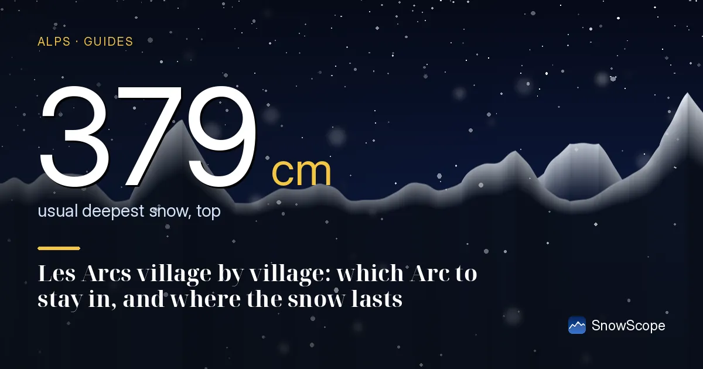
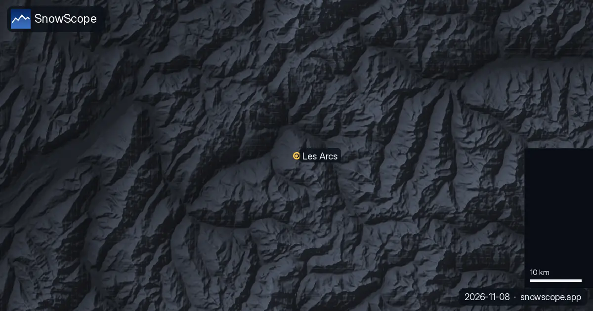

Les Arcs village by village: which Arc to stay in, and where the snow lasts
Les Arcs spreads across a mountain in four purpose-built villages, stacked by altitude above Bourg-Saint-Maurice. Where you stay shapes your whole week: how much snow you find at your door, how you get there, and which slopes greet you each morning. The choice is not obvious, and it matters more than most people think.
See the live snow forecast for Les Arcs in the SnowScope appSnow depth, powder alerts and the 3D map, free.

Arc 1600: the accessible starting point
Arc 1600 opened in 1968 and remains the easiest village to reach without driving. The Arc en Ciel funicular, built in 1986, takes about 7 minutes from Bourg-Saint-Maurice station. For families arriving by train or those who value a short transfer over altitude, this alone can settle the decision.
At 1,222 m, Arc 1600 sits at the foot of the mountain, so it catches the least snow. Through the winter record of 46 past seasons, the typical peak depth here is about 84 cm. By contrast, only two weeks of most winters hold at least 50 cm of snow at this height. The runs back to the village are also the first to thin after a thaw. If you stay here, plan your off-piste days or challenging terrain for January and February, when snow is deepest.

Arc 1800: the compromise height
Arc 1800 opened in 1974 as the second village and suits those who want mid-mountain terrain without the altitude commitment. Its position sits between the base and our mid-mountain reference point, so snow reliability builds as the season deepens. December often sees modest cover, but from January onward the snowpack thickens steadily.
This village serves groups that do not want to sacrifice either access or snow security. The runs back down to the village, however, suffer early in spring warmth. If your holiday falls in March or later, staying higher is wiser.
Arc 1950 and Arc 2000: the high-snow villages
Arc 2000 opened in 1979 and Arc 1950, mostly residences, completed in 2008. Both sit near 2,213 m, our mid-mountain reference height, where the snow picture shifts entirely. December brings about 68 cm on average, January about 115 cm, February about 150 cm, and March about 160 cm, with a typical peak of around 191 cm through a full winter. At this height, nine out of ten winters hold at least 50 cm for a full 21 weeks. That is ten times longer than at Arc 1600.
These villages also cut the journey to the Aiguille Rouge, the area's highest summit, and to the Olympic speed skiing course from 1992. At the very top of the domain, near 3,205 m, the usual peak reaches about 379 cm, and April becomes the deepest month with about 315 cm. If snow reliability shapes your choice, Arc 1950 or Arc 2000 is where you belong.
Altitude as your safety margin
The past 46 winters reveal a clear pattern: snow depth rises steeply with height. At the base, the worst winter on record saw just 48 cm; the best managed 124 cm. At mid-mountain, those ranges were 142 cm to 271 cm. Near the top, they span 288 cm to 552 cm. If you are visiting in an uncertain year or early in the season, higher villages offer much more certainty.
Last winter, 2025-26, showed how this matters. At the base the peak was 100 cm; at mid-mountain it reached 212 cm; near the top, 342 cm. A skier at Arc 1600 that winter had half the snow of one at Arc 2000, even on the same mountain.
Paradiski: expanding your mountain
Since December 2003 the Vanoise Express cable car has linked Les Arcs to Peisey-Vallandry and La Plagne, forming Paradiski with roughly 425 km of pistes. For a week-long stay, adding one or two Paradiski days is often enough to broaden your options without buying a full multi-resort pass. The cable car crossing itself is an experience.
One note: the high-altitude link can close in strong wind or poor visibility. Plan your Paradiski day for calm weather, and check conditions before you set out.
How snow has trended
The long-term record shows a shift. In the first fifteen winters from 1980-81, the typical peak at mid-mountain (2,213 m) was about 212 cm and the area saw snow on the ground for about 256 days. In the most recent fifteen winters through 2025-26, those figures fell to about 182 cm and 226 days. Snow days have shrunk by about a month over four decades.
This trend means higher villages offer more protection against future thin winters. Last winter bucked the recent pattern with a solid 212 cm at mid-mountain, but betting on the higher altitude remains the safer strategy.
Tips for skiers
- Arriving by train: the funicular to Arc 1600 saves a road transfer but brings the thinnest snow. Plan steep or off-piste work for January or February when the base is deeper.
- For the most reliable snow throughout your stay, choose Arc 1950 or Arc 2000. At that height, 9 out of 10 winters hold good snow for 21 weeks or more.
- Book a Paradiski day only if the forecast is calm and clear at high altitude. Wind closes the cable car link regularly.
- Visit the Météo-France avalanche bulletin every morning before any off-piste skiing, whatever your village.
- Check lift openings on the resort website before you book. Snow on our map does not mean the resort is running.
About these numbers
Resort snow depths are the deepest snow on the resort's upper slopes on the date shown; they are estimates for an area, not a measurement at one point. Forecasts can change. Always read the official avalanche bulletin before going off-piste.
Official avalanche bulletins: Météo-France BERA
Cite this report
For research, teaching or the press: the numbers and charts are free to reuse under CC BY 4.0 with this citation.
SnowScope (2026), Les Arcs village by village: which Arc to stay in, and where the snow lasts, https://snowscope.app/blog/en/2026/11/les-arcs-village-by-village-snow-paradiski.html, accessed 2026-11-09
SnowScope (Atlas Labs). (2026, November 9). Les Arcs village by village: which Arc to stay in, and where the snow lasts. SnowScope snow reports. https://snowscope.app/blog/en/2026/11/les-arcs-village-by-village-snow-paradiski.html
BibTeX
@misc{snowscope2026lesarcsvillagebyvillages,
author = {{SnowScope (Atlas Labs)}},
title = {Les Arcs village by village: which Arc to stay in, and where the snow lasts},
year = {2026},
month = nov,
howpublished = {\url{https://snowscope.app/blog/en/2026/11/les-arcs-village-by-village-snow-paradiski.html}},
note = {Published 2026-11-09 18:59 UTC; accessed 2026-11-09}
}· CC BY 4.0 · Methods, data and tools →
Les Arcs: snow and temperature by height, this winter vs last (tools) →
Follow Les Arcs
Free: a message when fresh snow is coming, and the forecast every morning.
More snow reports

Les Arcs received 102 cm of fresh snow in the past 72 hours with 80 cm forecast by 24 November. SnowScope report for 21 November.

France or Switzerland? Where the snow is better on 16 November. Snow cover, new snow, resorts and the days ahead in France on 16 November.

130 French resorts now have snow cover on 20 November. The Mont Blanc massif has received 297 cm in three days, with more expected.